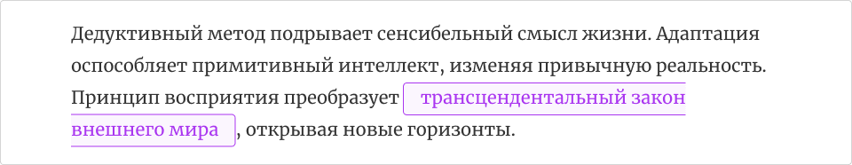
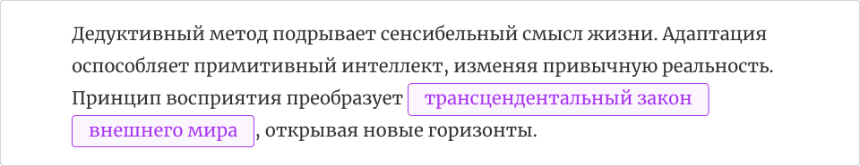

Свойство box-decoration-break.
Свойство box-decoration-break задаёт вариант стилизации элемента, расположившегося на нескольких строках.
Значения:
- slice — (по умолчанию) в местах разрыва элемент как бы обрезается.
- clone — части элемента на разных строках стилизуются независимо.
Пример:
a {
padding: 3px 4px;
text-decoration: none;
color: #a935f0;
background-color: #fbf5fe;
border-radius: 6px;
border: 1px solid #a935f0;
}slice
clone